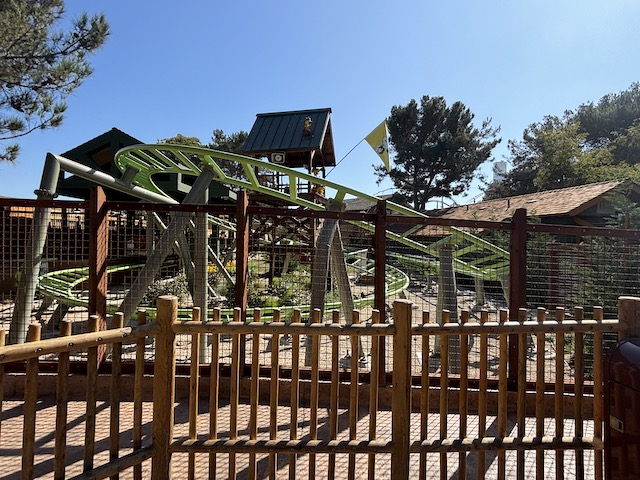
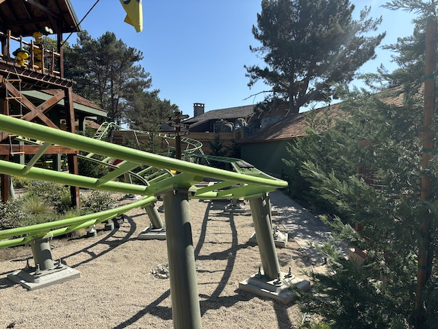
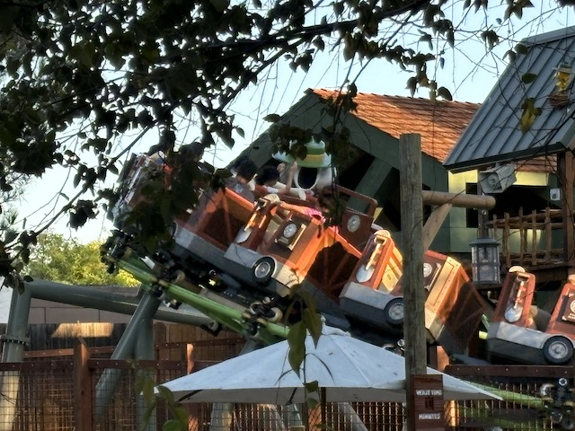

| |
Knotts Berry Farm 2024
All right. So it's time for our updates containing the rest of our Knotts Berry Farm visits for 2024 that weren't Boysenberry Festival related. Yeah. This was a bit of a lackluster year. But....there's still a few things worth bringing up in this update. Oh, lunch at the local IHOP BTW. We don't go here very often. And.....meh. It's good. But....not dying to go back.
For instance, Knotts actually got a brand new coaster in 2024!
Sure, it's just a kiddy coaster. But hey! Credit whore Kevin is still happy about that! =)
Moving on into Fiesta Village.
Whoa! I nearly forgot this ride existed! Better get another ride on it.
 Still a fun family coaster and a good fit for Knotts.
Still a fun family coaster and a good fit for Knotts.
Of course, some actual adult coasters were ridden today as well.
OK. Visit #2. This technically isn't a visit to Knotts Berry Farm itself. But....one friend of ours had never eaten at Mrs. Knotts. So we just decided to take him out to lunch there.
 I really need to eat here more often. I sort of stopped due to living really close and just eating at home. But the fried chicken here really is good.
I really need to eat here more often. I sort of stopped due to living really close and just eating at home. But the fried chicken here really is good.
All right. Visit #3. Hmm. Why are we back here in October (Nice new Camp Snoopy entrance)?
 OK! Enough procrastinating! Time to finally get another credit!
OK! Enough procrastinating! Time to finally get another credit!

So this was the replacement for Timberline Twister, the previous kiddy coaster (which was....an interesting kiddy coaster). Except....this is a clone. Also, feels weird since.....I hadn't been in this part of the park in forever (It had been a LONGASS TIME since I rode Timberline Twister).

The thing that's unique is that.....this kiddy coaster has a launch! Sure. It's very weak and not intense in even the slightest bit. But....it's still a launch that you feel. Even if it feels more like a push from your dad to make you go faster on playground equipment than a launch on any adult coaster.

Honestly, by kiddy coaster standards, this is one of the better ones. Though....yeah. Not something I'm gonna be riding on the vast majority of my KBF visits.
While we're here, might as well take a spin on the Camp Snoopy Train since.....we don't really do this often.
"YOU BLOCKHEAD BIRDS! I TOLD YOU TO MUMMIFY CHARLIE BROWN! NOT ME!"
Jaguar actually looks natural just going without snaking through Montezoomas Revenge's loop, and that creeps me out since.....I want Montezooma back.
Love how they decked it out for Halloween. That was a nice touch.
Well, at least Montezooma's Revenge's 2025 makeover is at least making actual progress.
OK. The ONE adult coaster here I had yet to do since my dry spell was Ghostrider. Time to FINALLY fix that since....it doesnt have a longass line now.
WEE!!! FLOATER AIR!!!
Damn! This ride is REALLY GOOD!!! Gotta figure out ways to get on this more without dealing with the horrendous line that seems to nearly always constantly plague it.
I love visiting during weekdays in October before Haunt (there's a reason I used to always visit this time of year).
 Far from my favorite, but it is getting better with age.
Far from my favorite, but it is getting better with age.
YES!!! IT'S BACK!!!
I know I really liked this when this first came out. I'm very happy to hear that the Calico Candy Mountain is not just a one-time thing, but is rather now a staple for Knotts Scary Farm.
The song is now stuck in your head. You're welcome. >=)
 Psst. Don't tell Disney that we also have the backside of water here too. We really don't want to get sued.
Psst. Don't tell Disney that we also have the backside of water here too. We really don't want to get sued.
Well, I guess Xcelerator gets its record back for the fastest launch on any still-existing roller coaster after a certain coaster in Japan closed. ='(
Just a quick reminder that we are visiting in October. =)
Fun fact. If you know where to look on clear days, you can see the Hollywood Sign from Supreme Scream. =)
Hmm. Elaborate theming or are they actually just storing the flywheel right there?
Can I get some update on Montezooma? I see the spike has been removed, and.....I see the remains of the spike are still covered. But....I'm still not seeing any update or movement with this project. And it's concerning (ESPECIALLY given the HORRENDOUS behavior of Cedar Flags recently). I know I'm gonna be visiting soon (expect a Boysenberry Festival update in the upcoming months). Really hope to see more work being done on Montezoomas Revenge then.
Home
|